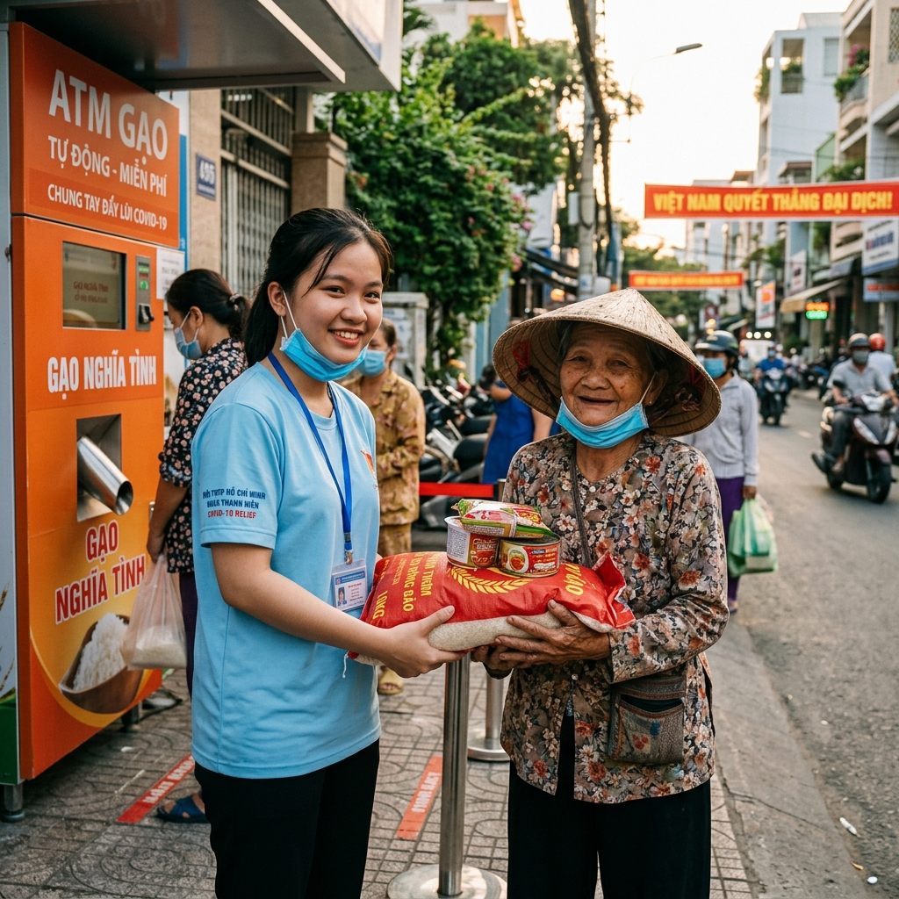
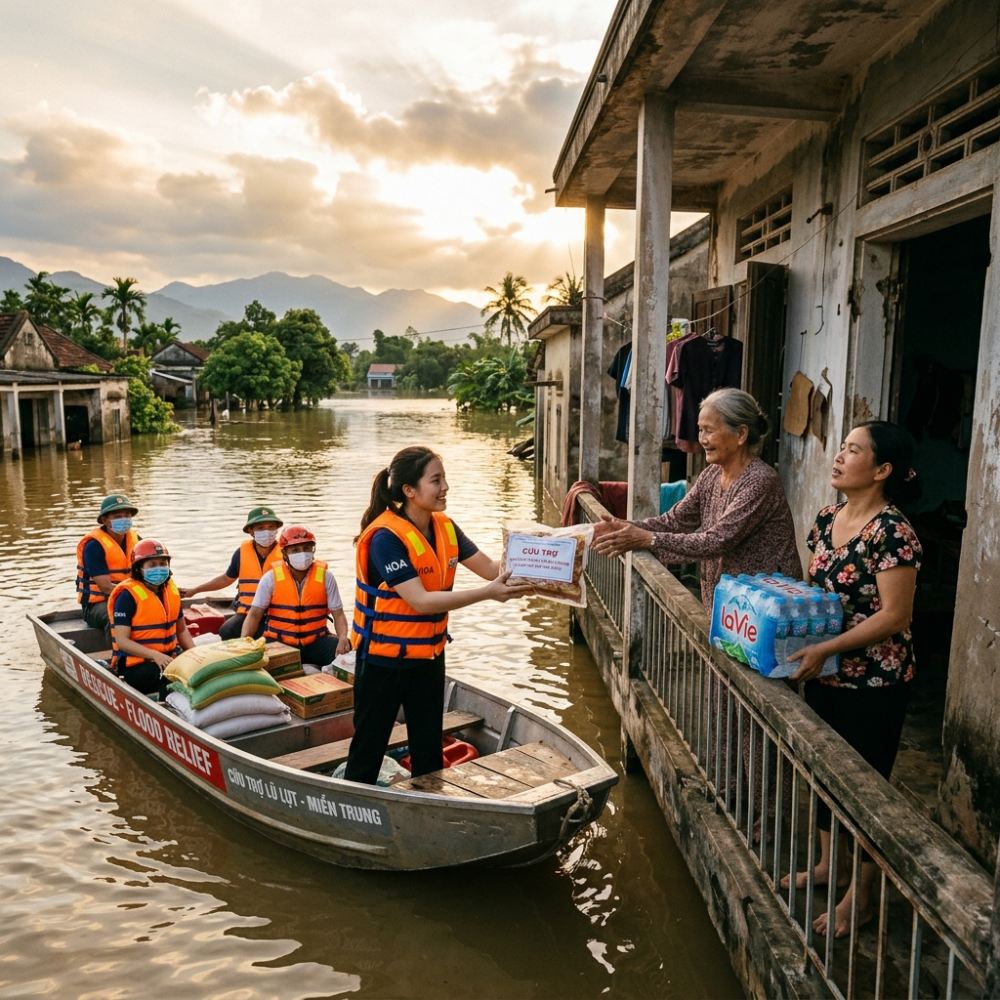
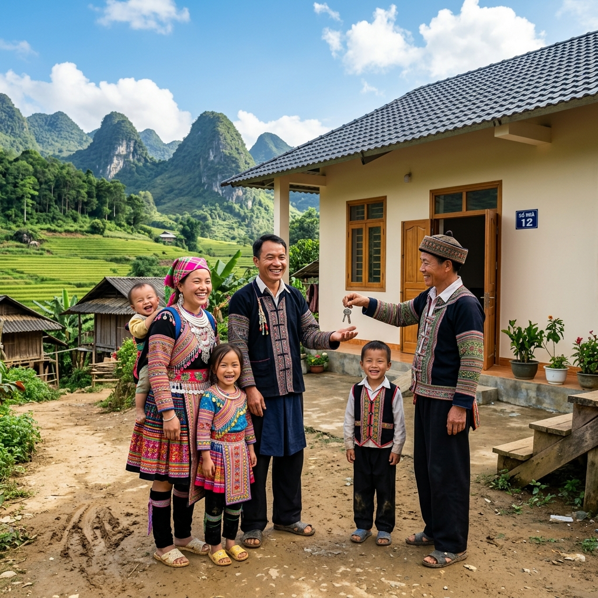
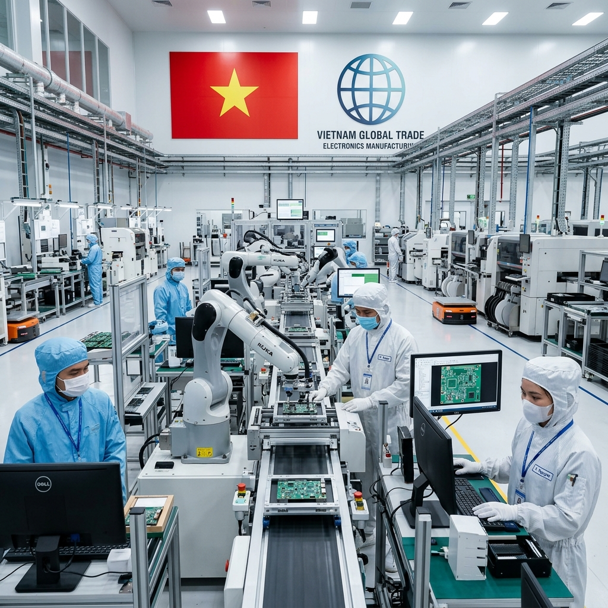

MINH CHỨNG THỰC TIỄN ĐẠI ĐOÀN KẾT
Đồng lòng vượt đại dịch COVID-19

Khi đất nước đối mặt với thử thách chưa từng có của đại dịch, tinh thần đại đoàn kết toàn dân tộc lại bùng cháy mạnh mẽ hơn bao giờ hết. Sự đồng lòng tự giác tuân thủ giãn cách xã hội của người dân, hàng vạn chiến sĩ y bác sĩ xung phong ra tuyến đầu chống dịch.
Đặc biệt, các mô hình tương trợ tự phát mang đậm tính nhân văn của dân tộc Việt Nam như "ATM gạo", "Siêu thị 0 đồng" hay sự đóng góp hàng ngàn tỷ đồng của nhân dân và kiều bào vào Quỹ vắc-xin đã tạo nên một pháo đài vững chắc chiến thắng dịch bệnh.
Triệu tấm lòng hướng về miền Trung bão lũ

Mỗi khi thiên tai, lũ lụt tàn phá khúc ruột miền Trung thân yêu (điển hình như siêu bão Yagi mới đây), cả nước lại chung một nhịp đập. Từ em nhỏ đập heo đất, cụ già quyên góp gạo, đến hàng ngàn đoàn xe cứu trợ vượt đường xa vận chuyển nhu yếu phẩm tiếp tế khẩn cấp.
Tinh thần "Lá lành đùm lá rách" của nhân dân trong nước kết hợp chặt chẽ với những tấm lòng hướng về quê hương của kiều bào nước ngoài đã trở thành bệ đỡ vững chắc, giúp bà con vùng bão nhanh chóng ổn định cuộc sống.
Phong trào "Cả nước chung tay vì người nghèo"

Đại đoàn kết chỉ bền chặt khi không một ai bị bỏ lại phía sau. Chương trình mục tiêu quốc gia về giảm nghèo bền vững, chính sách giao đất giao rừng tại Tây Nguyên, hỗ trợ vùng cao Tây Bắc đã giúp hàng triệu hộ dân vươn lên thoát nghèo.
Việc xây dựng hàng vạn ngôi nhà tình nghĩa, nhà Đại đoàn kết cùng sự hỗ trợ sinh kế từ cộng đồng đã góp phần quan trọng kéo giảm tỷ lệ hộ nghèo đa chiều cả nước xuống dưới mức 3% một cách ngoạn mục.
Hội nhập kinh tế toàn cầu & Khát vọng vươn tầm

Vận dụng tư tưởng Bác về kết hợp sức mạnh dân tộc và sức mạnh thời đại, Việt Nam ngày nay chủ động thiết lập hữu nghị và hội nhập sâu rộng. Đất nước đã ký kết thành công 16 hiệp định thương mại tự do (FTAs) thế hệ mới như CPTPP, EVFTA, RCEP...
Sức mạnh kinh tế được bồi đắp bởi dòng vốn đầu tư trực tiếp nước ngoài (FDI) trên 36 tỷ USD và hơn 19 tỷ USD kiều hối hàng năm, giúp số hóa sản xuất và đưa các sản phẩm công nghệ cao mang thương hiệu Việt tự tin vươn ra quốc tế.